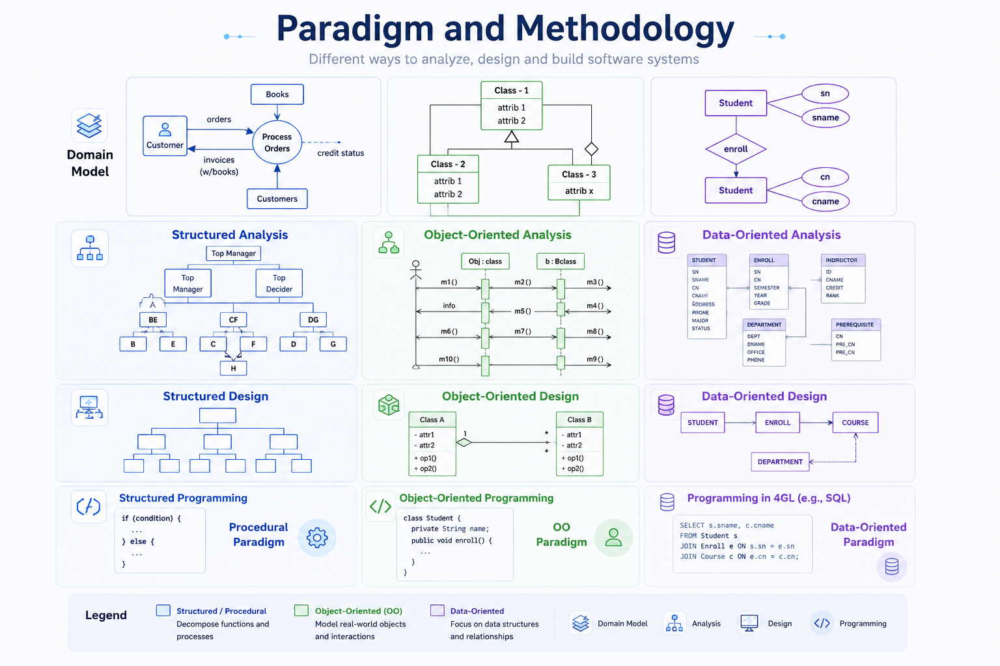

Software Paradigms
A paradigm is a way of seeing the software problem. Change the lens, and the same system is structured around different primary ideas.
Distinguish procedural, object-oriented and data-oriented paradigms and connect paradigm, methodology and process without confusing them.
What becomes the center of attention?
⚙️ Procedural
Functions, procedures, operations and control flow.
Question: What steps happen?🧱 Object-Oriented
Objects that combine state, responsibility and behavior.
Question: Who owns behavior?🗃️ Data-Oriented
Data structures, information movement and transformations.
Question: What data exists and changes?Lens versus route
Paradigm is the conceptual lens used to view and structure software reality. Methodology organizes how development work is carried out. They can influence one another, but they are not synonyms.
Paradigm and Methodology — visual reference

See the whole chapter as one engineering argument
Can you explain these without looking back?
What is the difference between a process and a methodology?
Why is throwaway prototyping different from evolutionary development?
Why is Spiral called risk-driven rather than simply iterative?
When can Waterfall be a reasonable engineering choice?
Why is there no universally “best” process model?
Challenge → Process → Methodology → Model → Selection → Paradigm. That is the mental map of Topic 04.